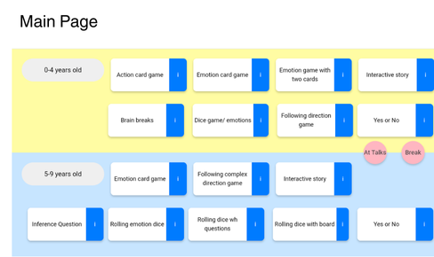

Robotic Assistance in Hospitals
This project introduces a robotic system designed to support medical staff in high-risk isolation wards. To minimize infection risk and reduce staff workload, we developed a team of two different types of robots:
a care robot for telemedicine and emergency detection, and a delivery robot for transporting items. The entire system is managed by a central server and provides an intuitive dashboard for medical personnel and an app for patients.

The games were co-designed through iterative feedback sessions, focusing on usability, engagement, and therapeutic relevance. The system allows children to interact with a robot and touchscreen simultaneously, enabling playful but structured therapy tasks that encourage verbal expression.
Technologies used include Flask (backend), ROS (robot middleware), and HTML/CSS, Javascript (frontend). The robot responds with gestures and speech, reinforcing correct actions and encouraging continued participation.
📎 GitHub link: https://github.com/soominimini/QT_game_final